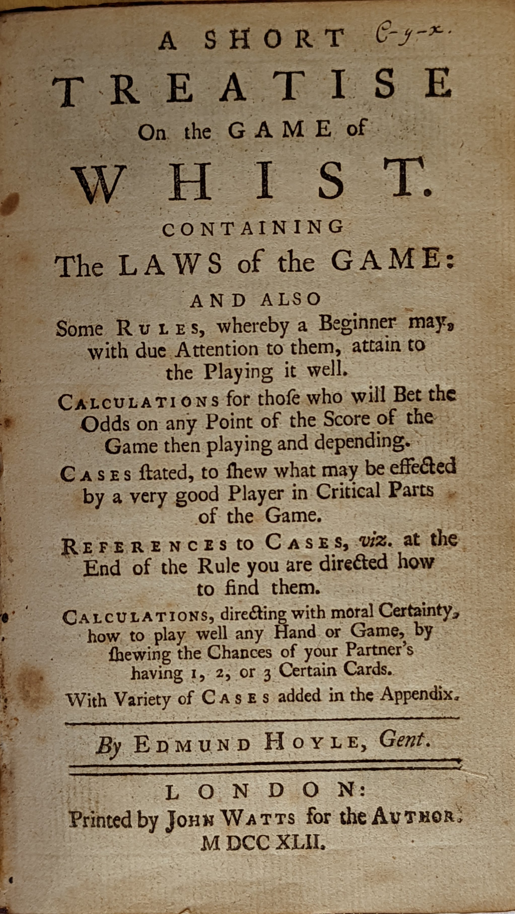

A Descriptive Bibliography of Edmond Hoyle
Copyright © 2014-26 by David Levy
(page updated 2026-01-30)User Guide
Whist.1.1
A Short Treatise on the Game of Whist, printed by John Watts for the Author, first London edition, 1742.
 |
Title: | A SHORT | TREATISE | On the GAME of | WHIST. | CONTAINING | The LAWS of the GAME: | AND ALSO | Some Rules, whereby a Beginner may, | with due Attention to them, attain to | the Playing it well. | Calculations for thoſe who will Bet the | Odds on any Point of the Score of the | Game then playing and depending. | Cases ſtated, to ſhew what may be effected | by a very good Player in Critical Parts | of the Game. | References to Cases, viz. at the | End of the Rule you are directed how | to find them. | Calculations, directing with moral Certainty, | how to play well any Hand or Game, by | ſhewing the Chances of your Partner’s | having 1, 2, or 3 Certain Cards. | With Variety of Cases added in the Appendix. | [rule] | By Edmund Hoyle, Gent. | [double rule] | LONDON: | Printed by John Watts for the Author. | M DCC XLII. |
| Collation: | 12o: A4 B–D12 E8 [$1–5 (−A3,4,E5) signed]; 48 leaves, pp. [8 ] [1] 2–86 [87–88] |
| Contents: | Signature (Page) Reference | Contents | Signature (Page) Reference | Running Titles |
| A1r | title | |||
| A1v | blank | |||
| A2r–A4r | ‘[headpiece] | THE | CONTENTS | [...]’ | A2r–A4r | ‘The CONTENTS.’ | |
| A4v | blank | |||
| B1r–C11v (1–46) | ‘[headpiece] | A SHORT | TREATISE | On the GAME of | WHIST. | [...]’ | B1v–E7r (2–85) | ‘A Short Treatise on | the Game of Whist’ | |
| on C11v (46) | ‘[...] | {What follows in this Treatise | is the Addition promiſed.} | [tailpiece]’ | |||
| C12r–E7v (47–86) | chapters IX-XIV | E7v (86) | ‘A Short Treatise, &c.’ | |
| E8r–E8v (87–88) | blank |
| Catchwords: | B12v(24) CHAP [CHAP.]; C6v(36) ſup- [poſe] |
| Publisher: | Edmond Hoyle |
| Printer: | John Watts |
| Price: | 1gn. (inferred) |
| References: | ESTC T203439, Jessel 769, Marshall s7 no.8 p3 (1889-07-06), Marshall s7 no.8 p83 (1889-08-03), Rather 1 |
| Copies Seen: | ABu [In SB 7951 Hoy]; BFl [I.795/HOYL (b1124998)]; O [Vet. A4 f.285] (ECCO); NNPM [E3 092 D 079483]; Levy [1563] |
| Other Copies: | Eu [V.19.67] |
| Notes: | 1742-11-17: Entered at Stationers' Hall in the name of Edmond Hoyle. |